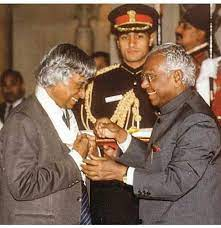
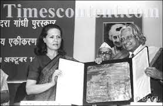

Dr. APJ Abdul Kalam, also known as the "Missile Man of India," was a renowned scientist, visionary, and the 11th President of India. His life journey is truly inspiring, filled with determination, humility, and a relentless pursuit of knowledge.
Born into a humble family in Rameswaram, Tamil Nadu, on October 15, 1931, Dr. Kalam faced numerous challenges throughout his early life. However, his strong willpower and passion for learning led him to excel in academics, eventually earning degrees in aerospace engineering.
Dr. Kalam made significant contributions to India's space and defense programs, playing a key role in the development of the country's first satellite launch vehicle and ballistic missile technologies. His leadership and technical expertise earned him great respect and admiration both in India and abroad.
Despite his remarkable achievements, Dr. Kalam remained a humble and down-to-earth individual. He dedicated himself to inspiring and motivating the youth of India, emphasizing the importance of dreams, hard work, and perseverance. His speeches and writings continue to resonate with people of all ages, inspiring them to strive for excellence.
"Dream, dream, dream. Dreams transform into thoughts, and thoughts result in action."
- Dr. APJ Abdul Kalam
Dr. Kalam's commitment to education and his vision for a developed India led him to actively engage with students and encourage scientific research. He firmly believed that the youth held the power to shape the nation's future and encouraged them to embrace innovation, entrepreneurship, and social responsibility.
Famous Awards and Achievements
|  | Bharat RatnaFormer President of India, APJ Abdul Kalam was awarded India's highest civilian honour, the Bharat Ratna in 1997, almost five years before he became the President on July 25, 2002. Popularly called the 'Missile Man of India'. The award was in recognition of extraordinary performance in the field of literature, science, public services, and arts only. This award belongs to all people of India without any discrimination of sex, race, and age. |
Padma Vibushan and Padma BhushanHe was awarded the coveted civilian awards - Padma Bhushan (1981) and Padma Vibhushan (1990) and the highest civilian award Bharat Ratna (1997).A great Indian Scientist A.P.J Abdul Kalam was born on 15 October 1931 at Rameswaram and studied physics and aerospace engineering. All his life he worked as a scientist in premier research institutions of India- DRDO (Defence Research and Development Organisation) and ISRO (Indian Space Research Organisation). |
 |
|  | Indira Gandhi Award for National IntegrationThe Indira Gandhi Award for National Integration is a prestigious award accorded by the Indian National Congress, after Indira Gandhi, a former Prime Minister of India. The award is given annually, starting from 1985, to distinguished persons/institutions for promoting national integration and understanding and fellowship amongst religious groups, communities, ethnic groups, cultures, languages and traditions of India |
APJ Abdul Kalam Quotes
You have to dream before your dreams can come true.
Don't take rest after your first victory because if you fail in second, more lips are waiting to say that your first victory was just luck.
All of us do not have equal talent. But, all of us have an equal opportunity to develop our talents.
Learn More